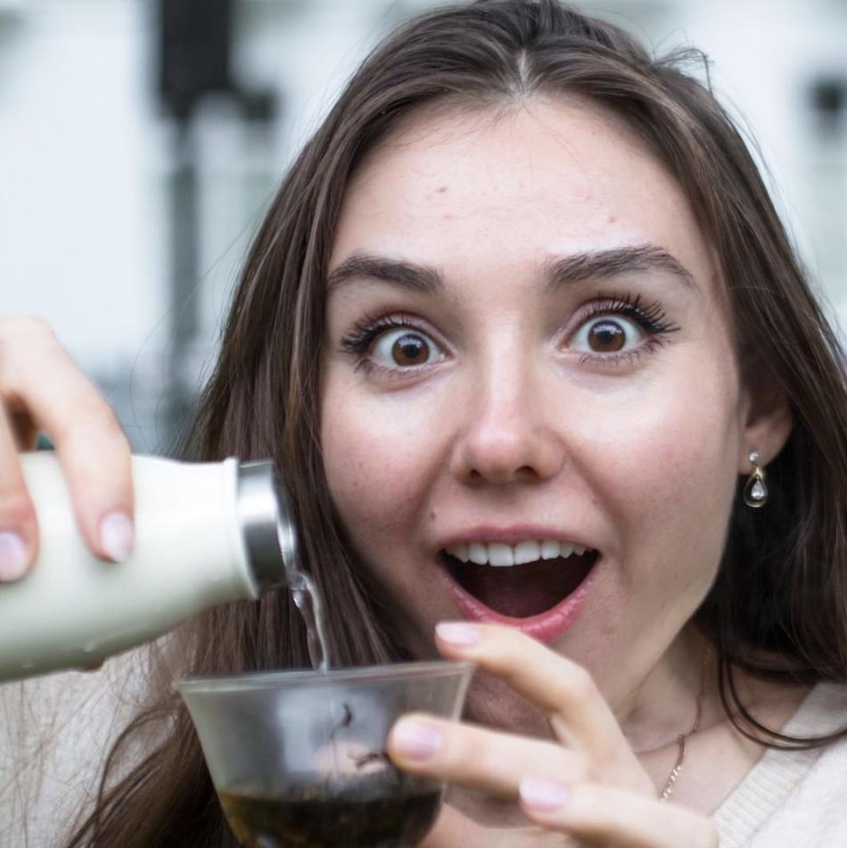

About us
Yulia has been working as an environmental scientist for over 5 years before commencing on the beeswax wraps journey together with her partner Victor. She is passionate about empowering individuals, not just large corporations to combat the global plastic pollution problem. She has the most amazing research skills - both scientific and everyday life research. Ask her anything and she will fight hard to dig out the right answer for you, backed by qualified resources She is playing the crucial role in ensuring at every step in making the wraps is as environmentally friendly as possible. Last, but not the least, she is full of new ideas and will never hesitate to look ahead

Victor is a civil engineer and he has spent nearly 4 years designing and building bridges and as well as monitoring concrete on site. Designing things to last, and conserving resources is Victor-engineer's main passion at work and beeswax wraps is his way of allowing people and households, not only engineering firms, play an important role in making our planet a cleaner place. Victor remembers: as he as growing up his parents afforded themselves a first powerful "Western" (non-soviet) Vacuum cleaner. Victor's weekly help-around-the-house task was to hoover the whole flat. After about 2 years of use, the pipe slowly started tearing and it became unbearable. Viktor and his dad had a chat: Victor: "Dad, can we just buy a new pipe?"
Dad: "No, manufacturer doesn't produce them, we just want us to buy a new hoover..."
Victor: "Oh no, but we have no money, that's not fair!"
Dad: "Well, the best we can do is just get a few rods and a duct tape son"And so they did, but the thought of creating and owning quality possessions and products tha last never left Victor. Beeswax wraps is his way of allowing individuals play the key role in minimising the use of our resources and minimising the use of throw-away plastic whilst enjoying quality product which lasts
Dad: "No, manufacturer doesn't produce them, we just want us to buy a new hoover..."
Victor: "Oh no, but we have no money, that's not fair!"
Dad: "Well, the best we can do is just get a few rods and a duct tape son"And so they did, but the thought of creating and owning quality possessions and products tha last never left Victor. Beeswax wraps is his way of allowing individuals play the key role in minimising the use of our resources and minimising the use of throw-away plastic whilst enjoying quality product which lasts